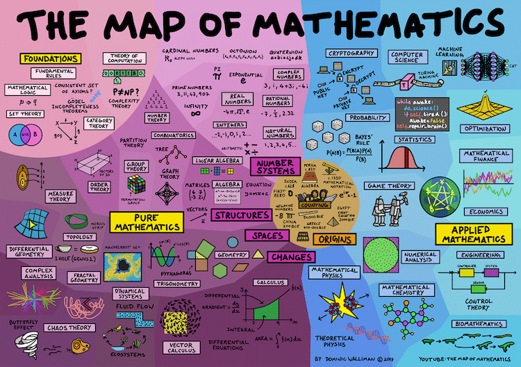
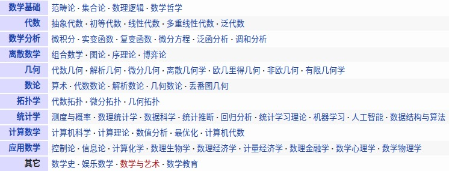

Home
Mathematics & Scientific Computing¶
Overview¶
-
Wolfram: Computation Meets Knowledge
- Wolfram MathWorld: The Web's Most Extensive Mathematics Resource
-
Wolfram|Alpha: Computational Intelligence
-
S.O.S. MATHematics is your free resource for math review material from Algebra to Differential Equations!


Online Tools¶
-
云算网: 用云计算技术在线为您求解矩阵运算，数学规划，和数据挖掘领域内的一系列问题
Programming¶
- Mathematical software - swMATH
- Programs in Mathematics
- Mathematical Programming Society
-
Jupyter Notebooks
- Jupyter
-
nbviewer: A simple way to share Jupyter Notebooks
Python¶
Matlab¶
R¶
Maths Topics¶
- 偏导数、方向导数、梯度、微分